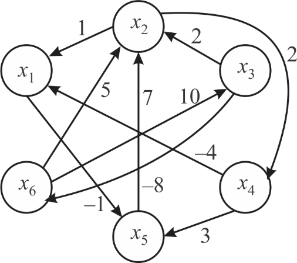
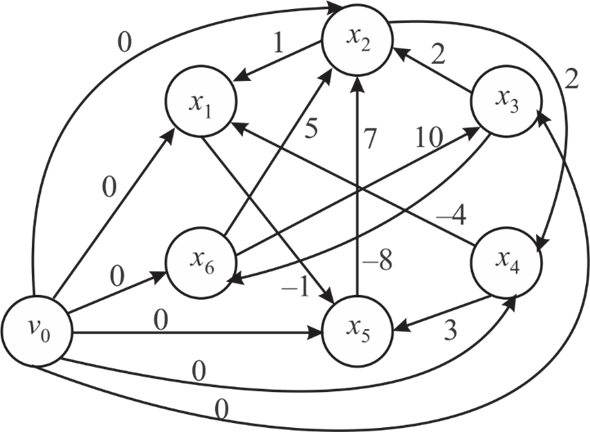
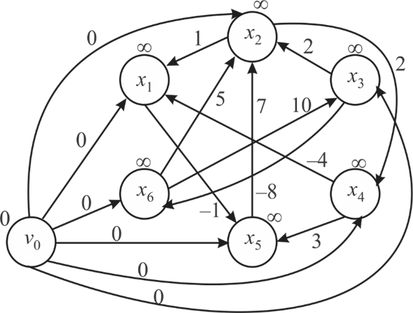
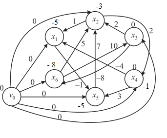
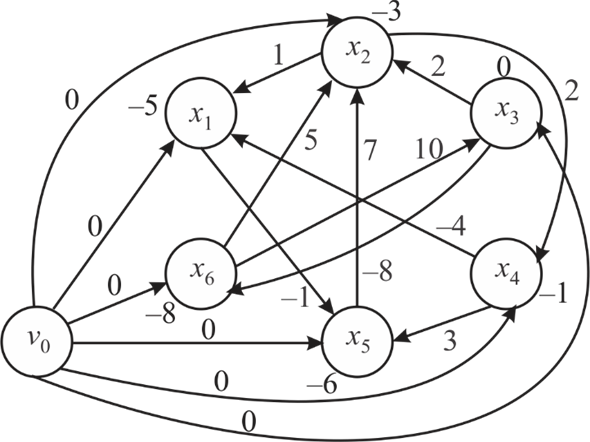
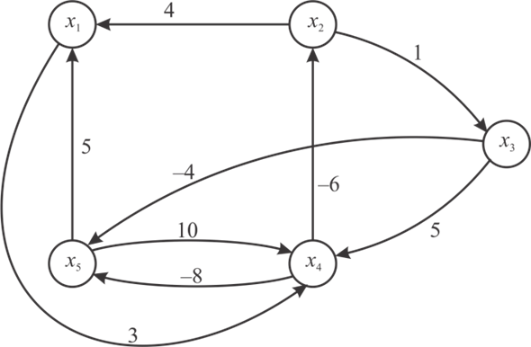
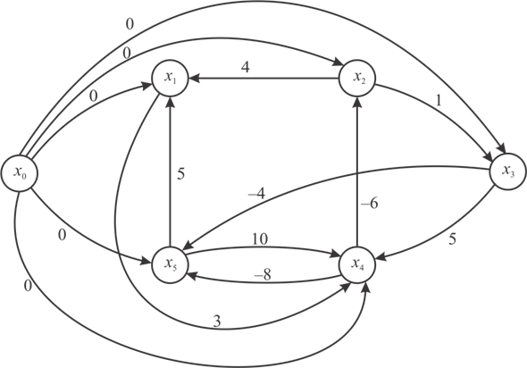
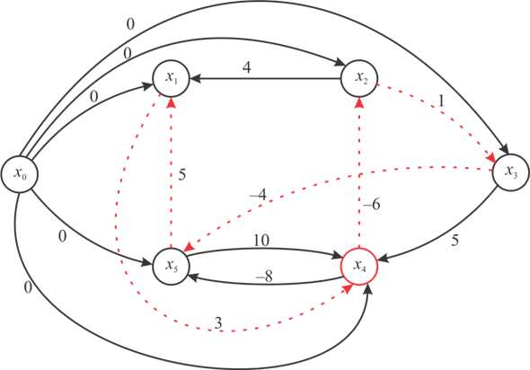

Solving a system of difference constraints:
• A feasible solution for a system of difference constraints can be found by running Bellman-Ford algorithm, on constraint graph.
• If the Bellman-Ford identifies a negative cycle in constraint graph, then it returns FALSE. That is, there is no feasible solution for the given system of difference constraints.
• If the Bellman-Ford algorithm returns TRUE, the shortest path weights of vertices gives a solution.
Making constraint graph from the given system of difference constraints:
• To find the feasible solution in the provided system of differential constraints, first of all need to construct the constraint graph corresponding to the given system of in equations.
• For each constraint, (where x is some constant), make an edge from a to b and then give that edge weight of x.
• Construct the graph for the all given in equations as follows:

• Now to solve the above constraint graph, add the additional vertex to guarantee that the all vertices are reachable from this vertex, also assign 0 weights to all edges from that vertex so that it cannot alter the shortest path. Then the graph will be as follows:

Running Bellman-Ford algorithm on the above graph:
Since the for loop in Bellman-Ford algorithm runs times, it runs 6 times or 6 steps on the above generated graph.
Step 1:
In first iteration the initial graph and array will look like as follows:

|
Node |
v 0 |
x 1 |
x 2 |
x 3 |
x 4 |
x 5 |
x 6 |
|
Cost |
0 |
∞ |
∞ |
∞ |
∞ |
∞ |
∞ |
• Now take the each edge and relax using RELAX algorithm. That is update the cost or distance.
• For node v0 since every node is reachable in 0 cost and it is better than ∞. so the cost for all nodes from v0 will be zero.
• After first iteration the graph will be as follows:
|
Node |
v 0 |
x 1 |
x 2 |
x 3 |
x 4 |
x 5 |
x 6 |
|
Cost |
0 |
-4 |
-3 |
0 |
0 |
-1 |
-8 |
Step 2:
• Again take each edge and perform relaxation.
• Only for the edge (x1,x5) , the cost of x5 is updated to -5.
• After iteration the graph will be as follows:
|
Node |
v 0 |
x 1 |
x 2 |
x 3 |
x 4 |
x 5 |
x 6 |
|
Cost |
0 |
-4 |
-3 |
0 |
0 |
-5 |
-8 |
Step 3:
• Again take each edge and perform relaxation.
• For the edge (x2,x4) , the cost of x5 is updated to -1.
• For the edge (x4,x1) , the cost of x5 is updated to -5.
• After iteration the graph will be as follows:

|
Node |
v 0 |
x 1 |
x 2 |
x 3 |
x 4 |
x 5 |
x 6 |
|
Cost |
0 |
-5 |
-3 |
0 |
-1 |
-5 |
-8 |
Step 4:
• Again take each edge and perform relaxation.
• Only for the edge (x1,x5) , the cost of x5 is updated to -6.
• After iteration the graph will be as follows:
|
v 0 |
x 1 |
x 2 |
x 3 |
x 4 |
x 5 |
x 6 |
|
|
Cost |
0 |
-5 |
-3 |
0 |
-1 |
-6 |
-8 |
There are no further possibilities to update the costs in the iteration 5 and 6.
Thus, at the end of the 6th iteration the graph with shortest distances is as follows:

• Now the algorithm iterates one more time to check if there exist a negative weight cycle or not, in the constraint graph. If there is a negative cycle, the algorithm returns FALSE. That is , there is no feasible solution for the given constraints.
• But in the above graph, there is no negative cycle. Thus the shortest distances of vertices are the feasible solution for the given system of difference constraints.
Therefore the feasible solution for the given system of difference constraints
is (-5,-3,0,-1,-6,-8).
To find the feasible solution in the provided system of differential constraints, first of all need to construct the constraint graph corresponding to the system that can be drawn as:

Now to solve the above constraint graph, add the additional vertex x0 to guarantee that the constraint graph has few vertices which can be reached all other vertices. Additional vertex can be shown in the following graph:

Now the above graph can be solved by the following Bellman ford algorithm:
Step-1:
Provide the definition of the Bellman Ford Algorithm which takes an input in the form of vertex source and it fills the distance array with information of shortest-path.
Bellman_Ford (vertex source, list vertex, list edge)
Step-2:
In this step, now initialize the graph for the execution process, for every vertices v in the set of vertices:
if vertex v is taken as the source
//then the vertex distance is assigned to 0
distance[v]:= 0
else
// assign the distance of the vertex is infinity
distance[v]:= infinity
Step-3:
When the vertices are executed from source to the other connected, then relax edges repeatedly between of them.
// use for loop to access the all vertices,
for j from 1 to size(vertices)-1:
// now for every edge denoted as (u, v) with the weight w in the
//edges:
if distance[v]>distance[u] + w :
then,
distance[v]:= distance[u] + w
Step-4:
In the execution process of vertices check and test the negative-weight cycles with the following statements:
// Now check negative cycle for every edge (u, v) that consists the
//weight w in the edges:
if distance[v]>distance[u] + w :
Show error (“There is a negative-weight cycle exists in the
graph”)
After applying the above Bellman algorithm the shortest path can be found from the Vertex 0 to the all other vertices and there is no negative cycle shown in the following graph:

After applying the above Bellman algorithm, user obtained a negative cycle exists, which is shown by the red dotted line. The length of this negative cycle is or.
Hence the system has no feasible solution.
In single pair shortest path, there is source and destination always given. In linear programming, objective is to maximize or minimize some function.
Let be the single pair shortest-path weight from a given source s to a given destination t.
The constraints will be as follows:
, for all . When =0, then . Substitute by and to get the inequalities.
Since, now the constraints have changed, .
Since should be equal to , maximize .
- because also a solution to the set of inequalities.
Suppose y is the shortest path from s to t. Summing all the edges weight that lie on the path, the linear program will be as follows:
The inequality that was previously discussed is .
Thus,
Since, .
Bellman-Ford algorithm:
A Bellman-Ford algorithm which is implemented for a graph G = (V, E) with source vertex s and the weight function
Modifying the algorithm:
To implement it with m inequalities and n unknown
variables, which takes the running time is  .
.
Bellman-Ford algorithm is used to find the shortest path in the
graph G = (V, E) from a source s vertex to all
other vertices  of the
graph. This is the special algorithm which can work in the
condition if there are negative weights associated with the edges
of the graph.
of the
graph. This is the special algorithm which can work in the
condition if there are negative weights associated with the edges
of the graph.
This algorithm first checks if there is any negative weight cycle in the graph presen, then no solution exists for the graph, otherwise it gives the shortest path for the graph from the source vertex. This algorithm can also be used to solve the problem of difference constraints with inequalities.
Difference constraints system is the system in which we can
solve the linear inequalities of for two
unknowns x and y where, , and.
, and.
To solve this by using Bellman-Ford, first create the graph from the inequalities and
then apply the algorithm to find the negative weight cycle in the graph.
If there is no negative weight cycle, then it gives the solution for unknowns.
The complexity of the Bellman-Ford algorithm for V
vertices and E edges is. The
present algorithm uses an extra vertex  and draws
edges from it to every other vertex and hence, we have total of
m extra edges, where m is the number of unknown
variables.
and draws
edges from it to every other vertex and hence, we have total of
m extra edges, where m is the number of unknown
variables.
Similarly number of vertices equals .
.
To achieve the desired complexity, we remove the extra vertex and initialize and then apply the bellman-Ford algorithm over the graph.
So, the number of edges is m and the number of vertices
is n. Then the complexity of this algorithm is
Hence, by removing the concept of the extra node
from
the algorithm, use the algorithm for solving difference constraints
with m inequalities and n
unknowns with
running time.
Initially the vertex  is added.
Now assume that the source vertex of the
constraint graph is corresponded to the vertex.
is added.
Now assume that the source vertex of the
constraint graph is corresponded to the vertex.
If there is no negative-weight cycle present in the graph,
So,
…… (1)
For equation (1), set the valueand it can
be treated as single variable constraint with .
.
So,
The value of single variable constraint will be,
And
If there exist a shortest path from source vertex, set the
value as given below:
for every
So user will get the feasible solution for the given system.
Since by the triangle inequality, the following equation exists,
…… (2)
Since, and from equation (2),
Put the value of and in equation (2),
So from the above,
…… (3)
Similarly for constraint, triangle inequality is as follows:
So,
After simplification user will obtain the following result,
Hence bellman-Ford algorithm solved this variety of constraint.
Introduce the dummy variable x and assume , where denotes the set of solution to the system of different constraints if the given set is .
Since, the constraint exists if and only if and the constraint exists if .
Thus, there is the need to construct the constraint graph as follows:
Assume the vertices to be and draw the edges through the vertices. Let the weight from the initial vertex to another vertex be 0. Create the edge corresponding to the constraint having weight . Corresponding to the constraint the edge is created having negative weight .
Finally subtract the weight which is assigned to the vertex x from the weights of every vertex so that desired solution can be obtained by using the Bellman-Ford algorithm.
Difference constraints of an Algorithm
The solution of a system is depends on different constraints for the real values of constant b and integer type unknown variable x.
System of difference constraintsis the system in which we solve the linear inequalities of for two unknowns x and y where, andIn the inequality of system , where b is some real value. So b will contain some fractional as well as integer part.
For the solution of this inequality problem we follow the procedure:
1. Round value of b to next higher integer, this will definitely preserve the inequality.
2. Get the inequalities of the form where will be an integer.
3. Apply bellman-Ford algorithm to get integer values for the unknown values of x.
Bellman-Ford algorithm is used to find the shortest path in the graph G = (V, E) from a source s vertex to all other vertices of the graph. This is the special algorithm which can work in the condition if there are negative weights associated with the edges of the graph.
To solve difference inequality using Bellman-Ford we first create the graph from the inequalities and then apply the algorithm to find the negative weight cycle in the graph. If there is no negative weight cycle then it gives the solution for unknowns.
Bellman-Ford algorithm for the graph made from inequalities we first initialize the source vertex of the graph then test the edges whether there is a path from vertex u to vertex v by relaxing the edges. Then after check for the negative weight cycle in the graph and if there is no negative weight cycle then it will give the best solution for inequalities.
Hence is Bellman-Ford algorithm is the best algorithm for the solution of system of difference constraintsfor the real values of the b and integer x.
Difference constraints of algorithm :
For the real values of constant b of some integer type unknown variable x but it is not requisite that all the values of x are integers.
System of difference constraintsis the system in which we solve the linear inequalities of for two unknowns x and y where, and.
In the inequalityof systemwhere b is some real value so b will contain some fractional as well as integer part and the some of the x are integers but not all of them.
Solution of the procedure:
1. Round value of b to next higher integer, this should be done for the particular values of b for which we intend to obtain integer solutions, to preserving the inequality.
2. Get the inequalitiesof the form where will be an integer.
3. Apply bellman-Ford algorithm to get integer values for the unknown values of x.
Bellman-Ford algorithm is used to find the shortest path in the graph G = (V, E) from a source s vertex to all other vertices of the graph. This is the special algorithm which can work in the condition if there are negative weights associated with the edges of the graph.
To solve difference inequality using Bellman-Ford we first create the graph from the inequalities and then apply the algorithm to find the negative weight cycle in the graph.
If there is no negative weight cycle then it gives the solution for unknowns. Bellman Ford algorithm is the graph, which made from inequalities.
1. First initialize the source vertex of the graph then test the edges whether there is a path from vertex u to vertex v by relaxing the edges.
2. After check for the negative weight cycle in the graph and if there is no negative weight cycle then it will give the best solution for inequalities.
Hence is Bellman-Ford algorithm is the best algorithm for the solution of system of difference constraintsfor the real values of the b and some integer values of x.